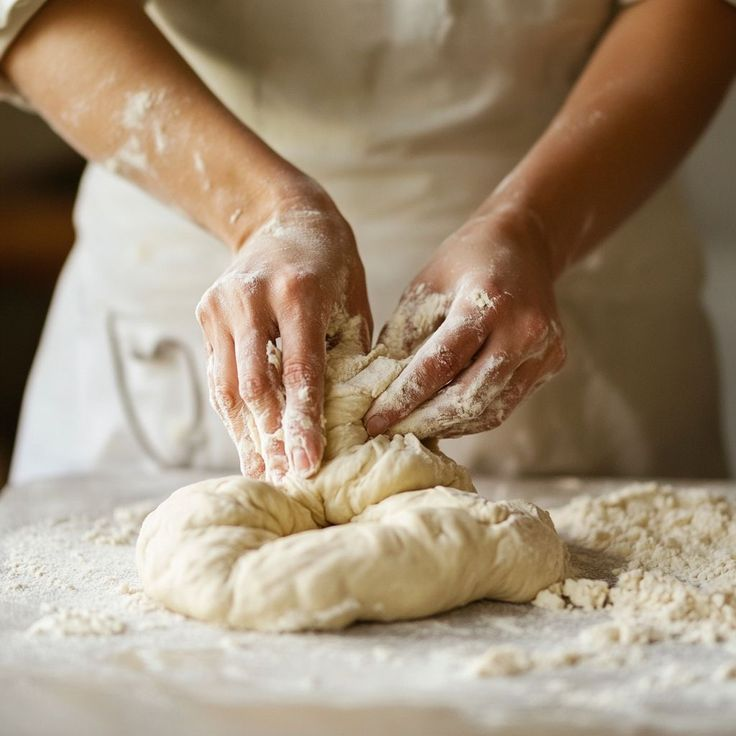
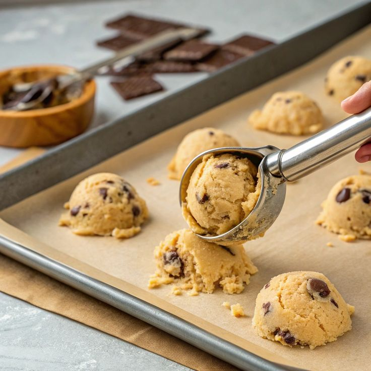
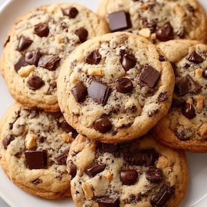

Tasty Recipies
Oatmeal Rasin Cookies
Cookies are one of my favourite foods. Here is an old-school recipe for non low fat cookies.
Ingredients
- 1 cup (230g) unsalted butter, softened to room temperature
- 1 cup (200g) packed light or dark brown sugar
- 1/4 cup (50g) granulated sugar 2 large eggs*
- 1 Tablespoon pure vanilla extract (yes, Tablespoon!)
- 1 and 1/2 cups (190g) all-purpse flour (spoon & leveled)
- 1 teaspoon baking soda
- 1/2 teaspoon salt
- 3 cups (240g) old-fashioned whole rolled oats
- 1 cup (140g) raisins*
Method
- Usinga mixer, cream the softened butter and both sugars together until smooth. Add the eggs and mix 1 minute. Add the vanilla and molasses and mix until combined. Set aside.
- In a separate bowl, toss the flour, baking soda, cinnamon, and salt together. Add to the wet ingredients and mic on low until combined. Beat on the oats, raisins. Dough will be thick, yet very sticky. Chill the dough for 30-60 minutes.
- Preheat oven to 350°F (177°C). Line two large baking sheets with parchment paper or silicone baking mats. Set aside.
- Roll balls of dough (about 2 tablespoons of dough per cookie) and place 2 inches apart on the baking sheets. Bake for 12-13 minutes until lightly browned on the sides. The centers will look very soft and undone. Remove from the oven and let cool on baking sheet for 5 minutes before transferring to a wire rack to cool completely. The cookies will continue to "set" on the baking sheet during this time.
Results in Photos
Making the Dough

Putting the Dough on the Cookie Sheet

The end Result

Other Good Recipes
Some other good cookie recipes: